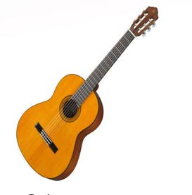
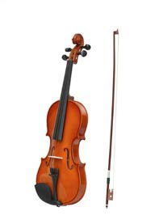

Stringed instruments
These are instruments whose sounds are produced by pulling or rubbing strings. A musician can use fingers, plectra or bows to play these instruments. Examples of stringed instruments are the guitar, violin, harp, zeze, enanga, ndono and litungu. Figure 3 shows some of the stringed instruments.

Guitar

Violin